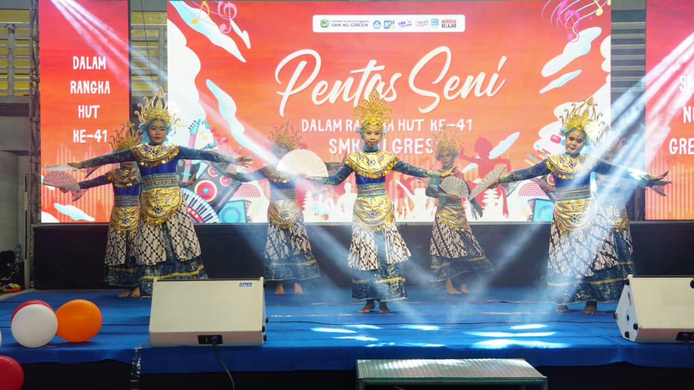
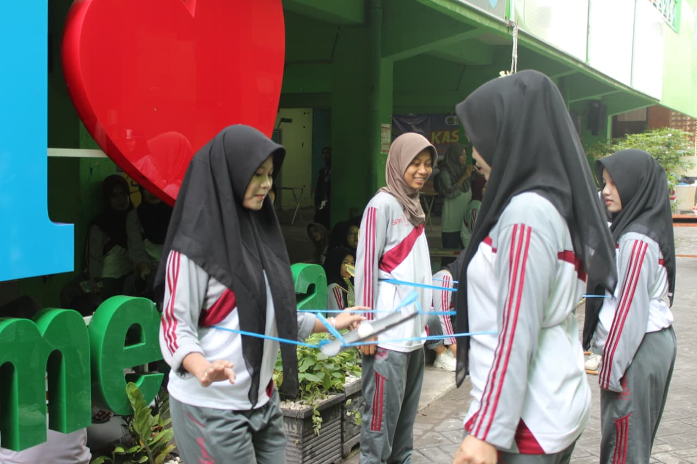

Rizqi Aprilia Putri, S.Pd.
Pembina Sekbid PADKS


PADKS adalah seksi bidang yang bertugas mengembangkan minat, bakat, serta kreativitas siswa di bidang seni dan budaya. Sekbid ini menjadi wadah bagi siswa untuk mengekspresikan diri melalui berbagai bentuk seni, sekaligus meningkatkan rasa apresiasi terhadap karya seni dan budaya, baik tradisional maupun modern.

Pentas Seni atau GEVORYA merupakan kegiatan yang diadakan oleh MPK OSIS untuk memperingati hari lahir SMK NU Gresik, di kegiatan Pentas Seni tersebut berisi penampilan dari murid-murid SMK NU Gresik, seperti karaoke, tari, dan fashion show yang tahun ini mendapatkan support dari batik gajah mungkur.

Jurnalis Mata Lensa merupakan program kerja tahunan yang bertujuan untuk memberikan edukasi dan pengetahuan melalui majalah. Di dalam program kerja ini terdapat Divisi Reporter, Editor, Fotografer dan Layouter.

Kegiatan KAS 2 merupakan Kegiatan yang dilaksanakan setelah Ujian Akhir Semester 2 yang bertujuan untuk memberikan refreshing kepada siswa-siswi SMK NU GRESIK. Terdapat 2 lomba, yakni lomba Pipa Goyang dan Suka Baca. Kegiatan ini dilaksanaan bersamaan dengan kegiatan Pemilihan Duta SMECTRA.